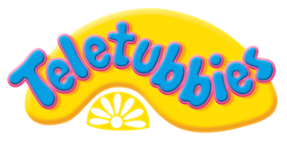
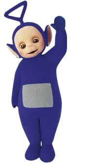
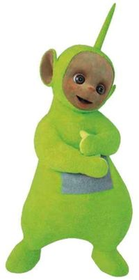
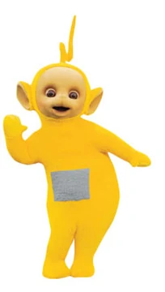
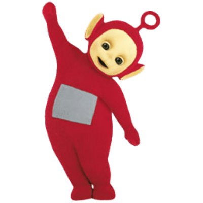

Teletubbies adalah sebuah acara televisi asal Inggris yang dikhususkan untuk penonton anak-anak usia prasekolah, diciptakan oleh Anne Wood dan Andrew Davenport dari ''Ragdoll Productions''. Serial ini berfokus dengan kisah keseharian empat makhluk berwarna-warni, Tinky Winky, Dipsy, Lala, dan Poo, yang dipanggil sebagai "Teletubbies" karena layar televisi yang tertanam di perut mereka. Teletubbies dapat dikenal tidak hanya dengan tubuh mereka yang memiliki warna yang mencolok, tetapi juga karena bentuk antena yang berbeda di kepala dari masing-masing karakter. Para Teletubbies berkomunikasi dengan celoteh yang didesain menyerupai suara bayi.[1]Teletubbies versi aslinya ditayangkan pada 1997 hingga 2001.[2] Namun, program ini diproduksi kembali pada 2014, dan Teletubbies ditayangkan kembali dengan episode terbaru yang tayang perdana 9 November 2015.[3] Program ini tidak hanya sukses secara komersial[4] dan menjadi bagian dari budaya pop yang digemari anak-anak bahkan dewasa, tetapi juga telah memenangkan beberapa penghargaan, termasuk BAFTA[5] dan Daytime Emmy Awards di AS.[6]
Di Inggris, Teletubbies ditayangkan melalui saluran televisi CBeebies. Di Indonesia, Teletubbies versi awal ditayangkan di Indosiar pada tahun 2000 hingga 2005, kemudian ditayangkan ulang di antv pada tahun 2006 hingga 2007, sedangkan Teletubbies versi terbaru dari musim keenam dan seterusnya ditayangkan di GTV sejak tahun 2018 dengan judul Teletubbies Datang Lagi.
Sinopsis
Program ini berlatar di sebuah lanskap rerumputan berbunga yang dihuni oleh kelinci dan suara cuitan burung yang terdengar di belakang layar. "Rumah" dari keempat makhluk Teletubbies adalah sebuah rumah bumi yang bernama "Tubbytronic Superdome" yang menyatu dengan tanah dan dapat diakses melalui lubang di atapnya atau pintu di kaki kubah. Para makhluk hidup bersama dengan beberapa tokoh, seperti Nono, mesin penghisap debu berbentuk mirip gajah berwarna biru (pada series 2015 Nono berganti warna menjadi kuning dengan gradasi pink pada mulutnya), dan Voice Trumpets. Latar program yang penuh warna-warni dan memberikan aura menyenangkan didesain khusus untuk menarik perhatian bayi yang menonton, sekaligus mengedukasi bayi untuk mengenali dan menjelajah beragam hal terkait dengan kehidupan sehari-hari.
Terdapat beragam peristiwa yang sering kali muncul sepanjang episode, seperti berinteraksi yang menyenangkan di antara Teletubbies dan Voice Trumpets, kekacauan yang disebabkan oleh Nono, video anak-anak yang tampil dalam layar di perut Teletubbies, dan peristiwa ajaib yang muncul sekali dalam episode. Peristiwa ini sering kali berbeda-beda dan terjadi tanpa sebab yang jelas. Setiap episode akan ditutup oleh Voice Trumpets dan narator. Teletubbies biasanya akan mengekspresikan kekecewaan atau sesekali menolak untuk berpisah, tetapi mereka akan tetap mengucapkan perpisahan kepada para penonton sambil masuk kembali ke dalam Tubbytronic Superdome selagi Matahari terbenam.
thingky wingky

Tinky Winky (diperankan oleh Dave Thompson dan Simon Shelton di versi asli, dan Jeremiah Krage di versi 2015,[7] Ade Kurniawan (yang kini menjadi seiyu Spongebob) sebagai seiyu untuk penayangan versi Bahasa Indonesia) adalah Teletubby pertama, sekaligus yang paling besar dan paling tua. Ia adalah laki-laki berwarna ungu dengan antena berbentuk segitiga di kepalanya. Barang kesukaannya adalah tas tangan berwarna merah yang sering dibawanya.
kembali ke atas
dipsi

Dipsy (diperankan oleh John Simmit di versi asli, dan Nick Kellington di versi 2015,[8] Revi Ansori sebagai seiyu untuk penayangan versi Bahasa Indonesia) adalah Teletubby kedua, laki-laki, berwarna hijau dengan antena berbentuk tongkat (bahasa Inggris: dipstick). Ia adalah Teletubbies yang paling keras kepala, dan terkadang menolak untuk bergabung dengan opini kelompok lain. Warna kulit di wajahnya sedikit lebih gelap dibandingkan Teletubbies lainnya, dan para kreator telah menyebut bahwa Dipsy adalah orang berkulit hitam.[9] Benda favoritnya adalah topi bercorak hitam putih yang menyerupai kulit sapi.
kembali ke atas
Lala

Lala (diperankan oleh Nikky Smedley di versi asli, dan Rebecca Hyland di versi 2015,[8] Clara Dewanti sebagai seiyu untuk penayangan versi Bahasa Indonesia) adalah Teletubby ketiga, perempuan, dengan warna kuning dengan antena yang berbentuk spiral (menyerupai rambut Upin). Lala adalah anak yang sangat manis, senang menyanyi dan berdansa, dan sering kali tampil mencari-cari Teletubbies lain. Mainan favoritnya adalah bola karet berwarna jingga yang sering ia gunakan untuk bermain bola.
kembali ke atas
poo

Poo (diperankan oleh Pui Fan Lee di versi asli, dan Rachelle Beinart di versi 2015,[8] Hanimah sebagai seiyu untuk penayangan versi Bahasa Indonesia) adalah Teletubby keempat, perempuan, sekaligus yang paling pendek dan kecil. Tubuhnya berwarna merah dengan antena yang berbentuk lingkaran, menyerupai alat untuk membuat balon sabun. Poo biasanya berbicara dengan suara yang lebih halus, dan disebut oleh kreator sebagai orang Kanton.[9] Poo hobi bermain skuter.
kembali ke atas